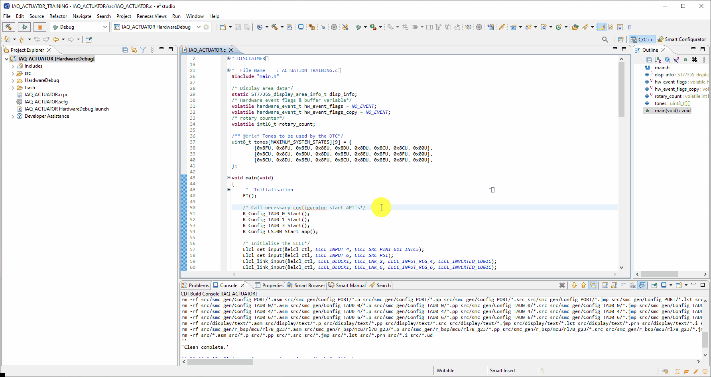
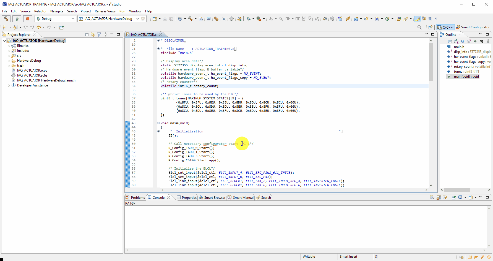
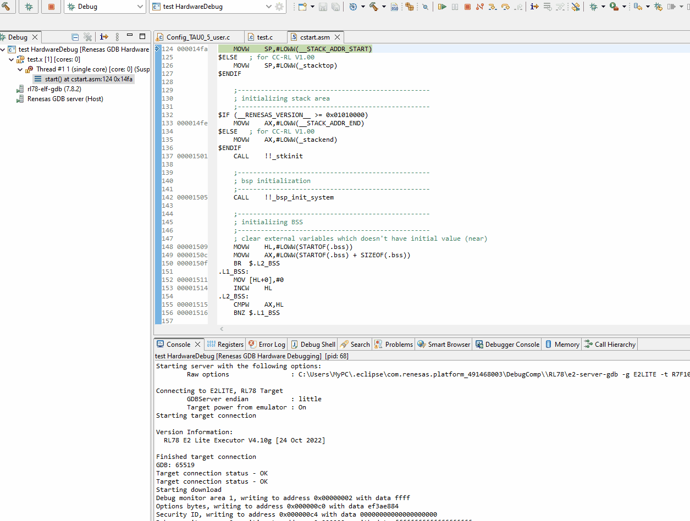

Here we will guide you through debugging this labs project and will provide details on how to verify the working of the project.
4.1 Build the project
To build the project please [Right-Click] the project and click Build Project.
4.2 Hardware
Before debugging the project, please ensure headers are fitted to the header H1 in positions 1-2
(VBATT-VDD) & 4-5 (VDD_RL78 - VDD).
Finally connect the E2-Lite - the user does not need to connect batteries for this lab as we will supply
the board via the debugger.
4.3 Debugging the project
To start a debug session please select the project by clicking on it and click the debug icon along the menu bar.
Finally Click the run icon, first it will run to main, click the run icon again and the project will start running.
4.4 Operating project
Now the project is running you can cycle through the different output states 1- 3.
- Each number represented on the screen indicates a system state.
- Each state represents a different LED brightness & buzzer tone sequence.
- To cycle through the states use the rotary encoder.
- To activate the state, click the button.